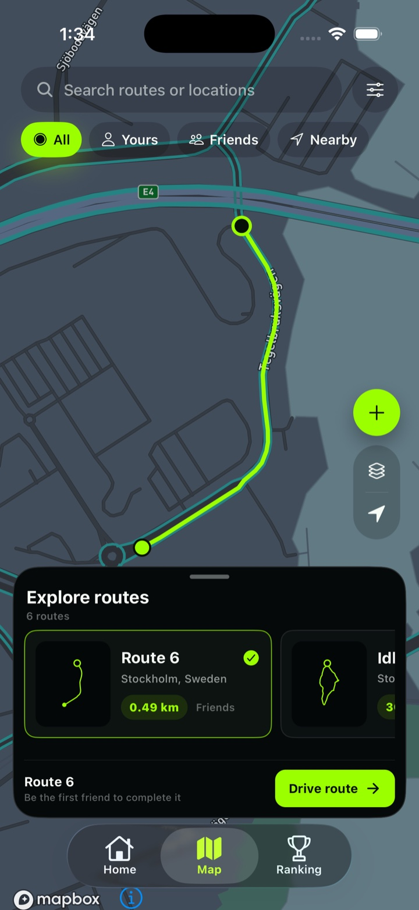
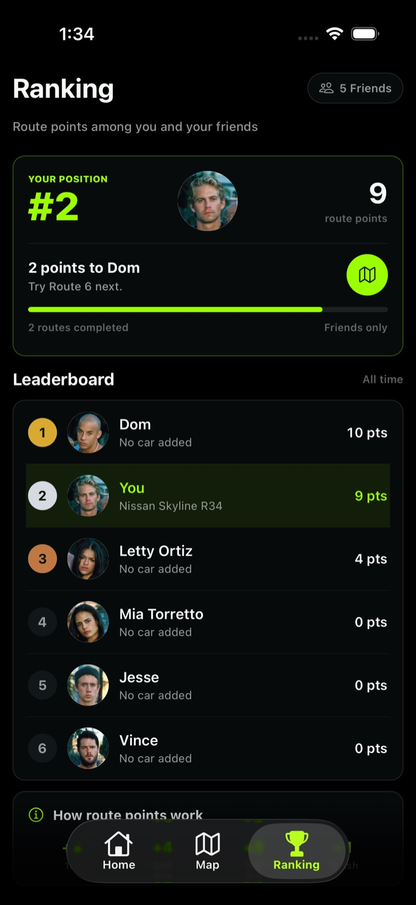
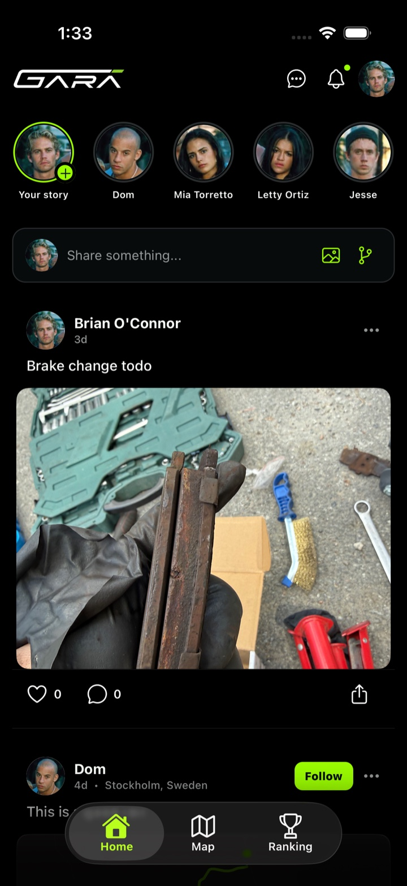
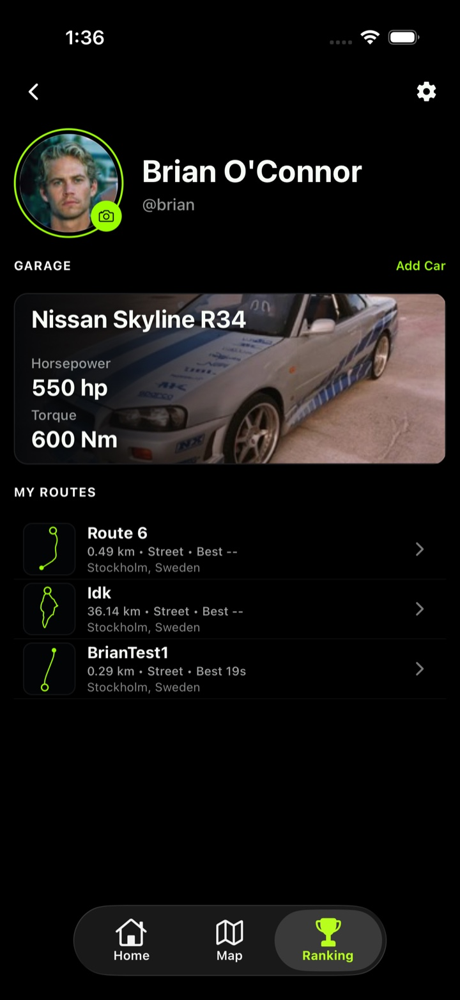
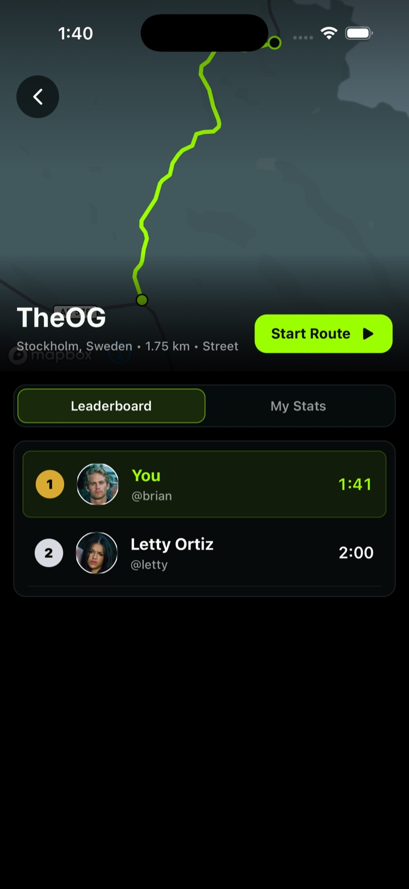

Start with your circle
See what friends are sharing, which routes are moving, and where the group has a new reason to drive.
FRIENDS → ROUTES → ACTIVITYGARA / 001 The friend-first driving app
Create a route. Share it with your circle. Keep a personal record of the roads you enjoy—at your own pace.
01Routes made
by your group
02Personal GPS
drive history
03Your roads
and your circle


01 / Experience One route. Four moments.
GARA connects route discovery, personal drive history and sharing with your circle. Screenshots illustrate the prototype; secure launch accounts are being prepared.
01 / 04 CURRENT APP FLOW

See what friends are sharing, which routes are moving, and where the group has a new reason to drive.
FRIENDS → ROUTES → ACTIVITYFind a friend route, explore nearby, or create your own. The map keeps the road—not an endless feed—at the center.
YOURS / FRIENDS / NEARBYNavigate to the start, record a foreground GPS drive and keep it in your personal history. Road laws and conditions always come first.
PERSONAL RECORD / YOUR PACEReturn to your routes and circle when you want another drive. Public-road times do not earn competitive points.
EXPLORE / REMEMBER / SHARE02 / Your circle Smaller on purpose.
The best challenge is personal. GARA connects routes, posts, profiles, and garages around your real driving circle.
Friend activity that has contextSee the route behind the result—not another empty like count.
Share with your circleFollow drivers and choose the audience for your posts.
Identity beyond a usernameYour routes, runs, friends, and garage in one profile.

03 / Scoring Clear by design.
Launch drives are personal history, not fastest-time competition. Timed ranking and competitive points stay unavailable unless a controlled course and result-validation system are independently verified.
DISCOVER01Preview routes↗
RECORD02Your drive↗
REMEMBER03Private GPS history↗
SHARE04Choose an audience↗
Prototype screenshots may show retired time rankings; they are not launch functionality.

04 / Identity Every driver has a story.
A GARA profile is a record of what you created, what you completed, who you drive with, and the cars that make it yours.
RoutesLines you created for the group
RunsYour history across every route
GarageThe cars behind the experience
05 / Responsibility The rule above every result.
GARA records a drive. It never makes unsafe driving acceptable. Laws, conditions, other road users, and good judgment always come first.
Speed limits and local laws apply on every route, every time.
Only drive where and when the route is appropriate.
Stop or abandon a run whenever conditions are not safe.
Early access / iPhone Your circle starts here.
GARA is being built for iPhone first. Public registration is not open yet. Email us if you would like to ask about future access.
Gara is intended for adults aged 18 and over. When Google sign-in is offered, Google account identity and email information are used to authenticate your Gara account. Location supports maps, deliberate drives and optional automatic journey mapping. Automatic mapping requires permission, keeps tracks on your device, and can miss trips; photos and social content support the features you choose to use. Read our Privacy Policy for details and current launch limitations.
Contact Gara↗